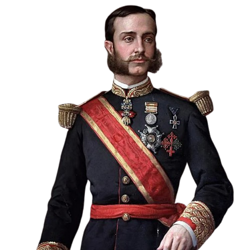
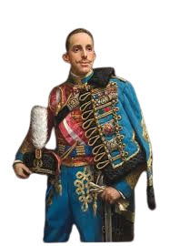

La Fase II comprende el periodo de la Restauración Borbónica, una etapa de estabilidad que comenzó con el regreso de la monarquía en 1874. Este siglo XX temprano estuvo marcado por el intento de modernizar España bajo el sistema de 'turnismo' político, enfrentando retos como la Guerra de Marruecos, la dictadura de Primo de Rivera y, finalmente, la crisis que dio paso a la Segunda República en 1931.

Alfonso XII de España, apodado "el Pacificador" (Madrid, 28 de noviembre de 1857-El Pardo, 25 de noviembre de 1885), fue rey de España entre 1874 y 1885. Hijo de la reina Isabel II y del rey consorte Francisco de Asís de Borbón, cuando inició su reinado terminó la Primera República y comenzó el período conocido como Restauración. Tras su muerte prematura a los veintisiete años, víctima de la tuberculosis, fue sucedido en el trono por su hijo Alfonso XIII, cuya minoría de edad estuvo encabezada por la regencia de su madre, la reina María Cristina.
Alfonso XII (1857-1885), hijo de Isabel II, restauró la monarquía borbónica en España en diciembre de 1874 tras el convulso Sexenio Democrático y el pronunciamiento del general Martínez Campos. Su reinado, apoyado por Antonio Cánovas del Castillo, trajo estabilidad política mediante la Constitución de 1876 y el fin de conflictos como la Tercera Guerra Carlista.
Diseñado por Cánovas del Castillo y basado en la Constitución de 1876, consolidó la Restauración borbónica mediante el "turno pacífico" de partidos dinásticos (Conservador y Liberal). Este régimen buscaba estabilidad tras el Sexenio Revolucionario usando el fraude electoral, el caciquismo y el "pucherazo" para pactar resultados.
Falleció prematuramente el 25 de noviembre de 1885 a los 27 años en el Palacio de El Pardo, víctima de tuberculosis. Su fallecimiento ocurrió poco antes de cumplir los 28 años, provocando una crisis política al dejar a la reina María Cristina embarazada y a la monarquía en una inestable situación de regencia.

Alfonso XIII, apodado "el Africano" por su férreo apoyo a la expansión colonial en Marruecos, reinó de 1902 a 1931. Su mandato se caracterizó por la inestabilidad política, la crisis del sistema liberal de la Restauración, la trágica guerra del Rif y el apoyo a la dictadura de Primo de Rivera (1923-1930). Su implicación política y fracaso en democratizar el país llevaron al exilio y la proclamación de la II República.
Fue rey desde su nacimiento hasta 1931, asumiendo el poder real a los 16 años en 1902. Su apodo surgió por impulsar la presencia colonial en África y apoyar activamente la guerra de Marruecos. Su reinado estuvo marcado por la inestabilidad política y la dictadura de Primo de Rivera.
Alfonso XIII, por su obsesivo apoyo a la costosa y sangrienta guerra del Rif, debilitó gravemente la monarquía española (1902-1931). Su intervencionismo político, apoyo a la dictadura de Primo de Rivera y el desastre de Annual (1921) dilapidaron su prestigio, provocando el fin del régimen y la proclamación de la Segunda República.
Alfonso XIII, por su obsesivo apoyo a la guerra colonial en Marruecos, vio el fin de su reinado el 14 de abril de 1931. Tras la crisis del desastre de Annual (1921), la dictadura de Primo de Rivera y el triunfo republicano en las elecciones municipales de 1931, el rey abandonó España, exiliándose a Francia y luego Roma, donde abdicó en 1941.